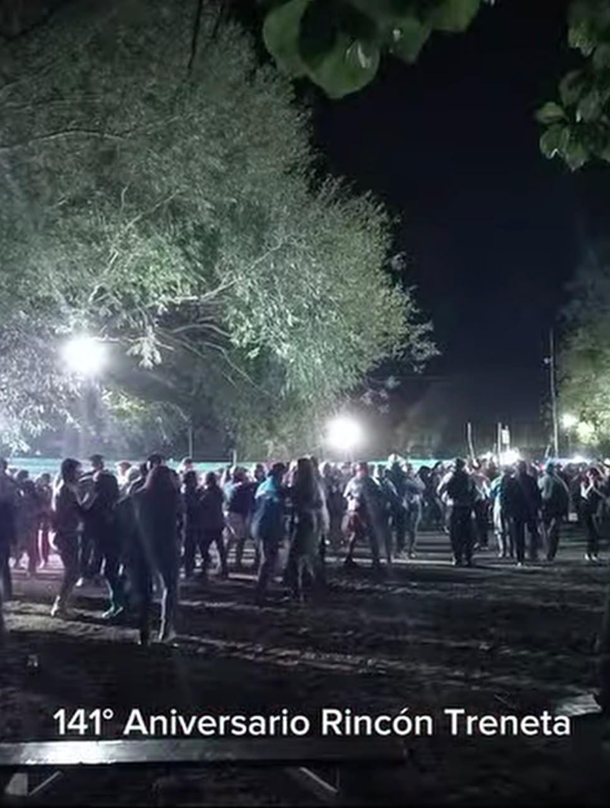
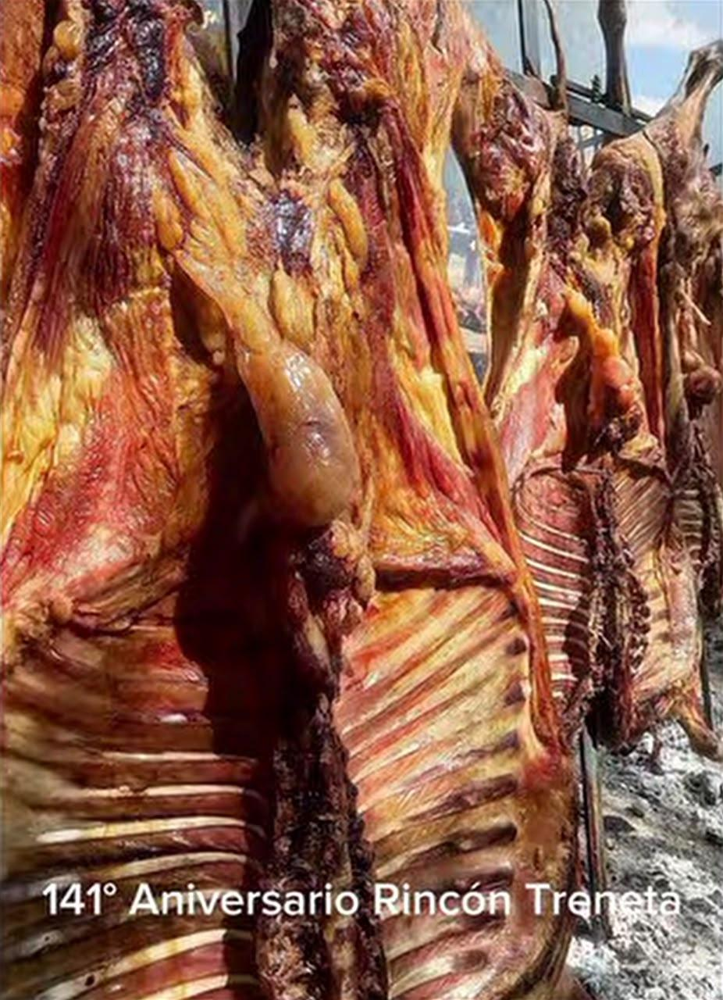
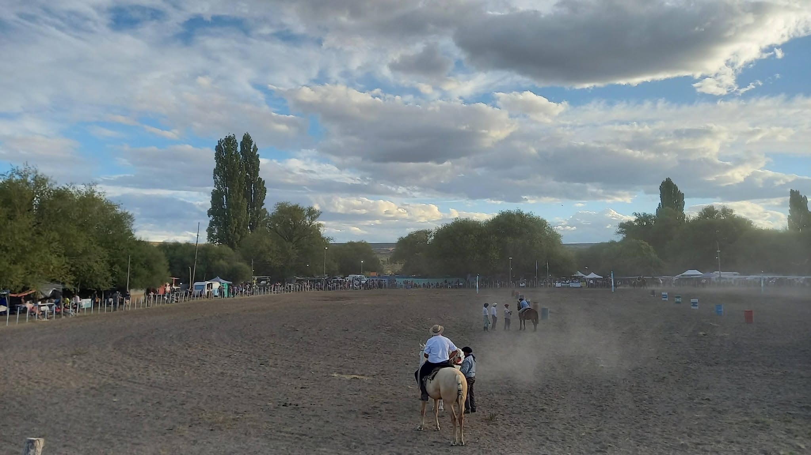
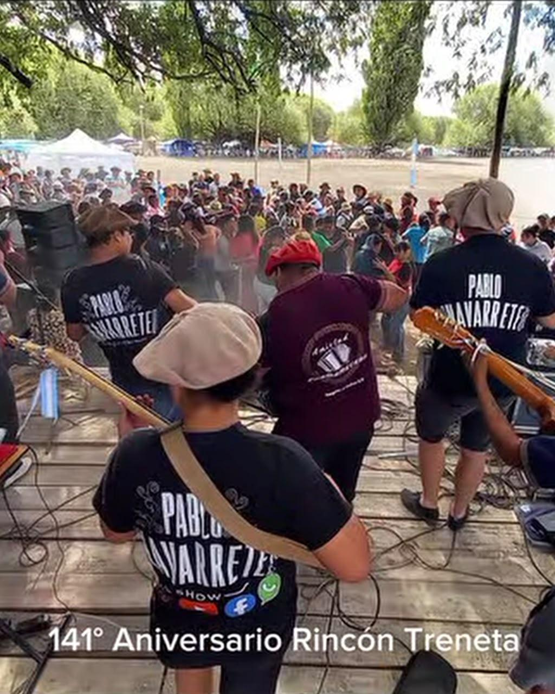

Cada mes de febrero, el paraje Treneta se prepara para vivir una de las celebraciones más esperadas por su comunidad: una fiesta que reúne a familias, vecinos, instituciones y visitantes para compartir, celebrar y mantener vivas las costumbres que forman parte de nuestra identidad rural.
La jornada comienza con el acto protocolar, un momento de reconocimiento y encuentro en el que se pone en valor la historia del paraje y el trabajo de quienes, día a día, construyen y sostienen la vida de la comunidad.

Desfiles, tradición y encuentro
Uno de los momentos más esperados es el desfile cívico de las instituciones, donde escuelas, organizaciones y diferentes actores de la comunidad participan mostrando con orgullo su pertenencia. Luego, el desfile criollo llena las calles de una colorida muestra de tradiciones, caballos y agrupaciones que representan nuestra cultura rural.

La celebración continúa con el almuerzo popular, una gran mesa comunitaria donde se comparte el tradicional asado para todos. Es el momento del encuentro, de la charla y de la alegría compartida.

Cuando cae la tarde, llega la jineteada, con las destrezas criollas que ponen en escena la habilidad de jinetes y caballos: la monta con encimera y bastos, la gurupa sureña y otras categorías que reúnen a participantes de toda la región.

La fiesta del Paraje Treneta es mucho más que una celebración: es un momento en el que la comunidad se encuentra, se reconoce y renueva sus lazos. Las tradiciones se transmiten de generación en generación.
